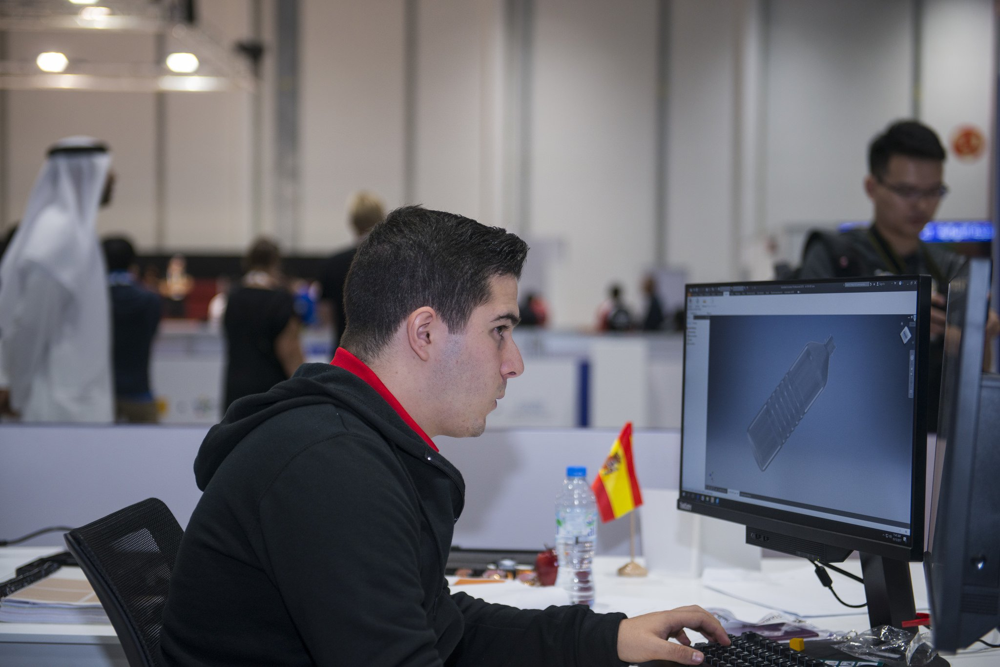

¿Le gustaría saber más?
- No dude en contactar con nuestro experto.
- Lorenzo@fpmislata.com

¿Le gustaría saber más?
Se refiere al uso de tecnologías de diseño asistido por ordenador para la elaboración de todos los modelos gráficos, planos, documentos y archivos que contengan la información necesaria para la fabricación y documentación de piezas y componentes típicos, que dan respuesta a las funciones y necesidades que se presentan en ingeniería mecánica.
Ciclos formativos relacionados
Aplicaciones
Cualquier proyecto mecánico diseñado, necesita ser concretado en unos planos que serán la base de trabajo de
otros departamentos para realizar la fabricación de las piezas, el montaje de los conjuntos, manuales de
funcionamiento o de mantenimiento, realización de ofertas comerciales, repuestos, y de otras muchas tareas.
El Diseño Mecánico mediante Sistemas CAD es utilizado para crear e interpretar planos de todo tipo, concretar diseños mecánicos, crear modelos virtuales en 3D, animarlos y realizar presentaciones foto realístas.
Principales industrias de aplicación
¿Le gustaría saber más?